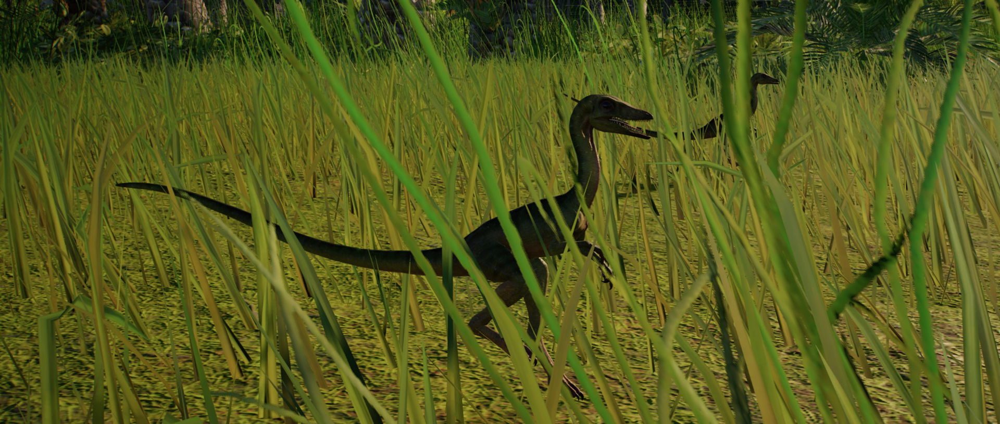

Compsognathus is one of the smallest theropods ever to have existed, at under 1m in length and weighing little over 2kg – roughly the size of a chicken. Despite its small stature Compsognathus is a carnivore, using its speed and agility to hunt down lizards, insects and even other small dinosaurs. Compsognathus’ name translates to ‘pretty jaw’, a reference to its long, narrow snout.